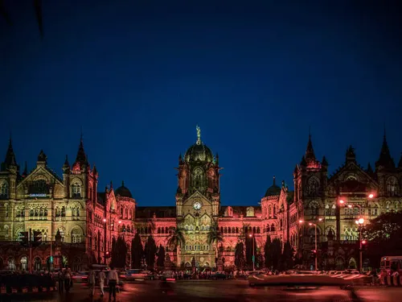

Chhatrapati Shivaji Terminus

Chhatrapati Shivaji Terminus (CST) is a historic railway station and UNESCO World Heritage Site located in Mumbai.
Built in 1888, it showcases a stunning blend of Victorian Gothic Revival and traditional Indian architectural styles.
History
Originally named Victoria Terminus, CST was designed by British architect Frederick William Stevens.
It served as the headquarters of the Great Indian Peninsula Railway and became a symbol of Mumbai's colonial heritage.
Renamed in 1996 to honor the Maratha king Chhatrapati Shivaji, CST continues to be a bustling hub for millions of
passengers daily.
Significance
With its ornate carvings, high domes, and stained glass windows, CST is a masterpiece of Gothic architecture.
It represents Mumbai's rich history and stands as a testament to its vibrant cultural and architectural legacy.